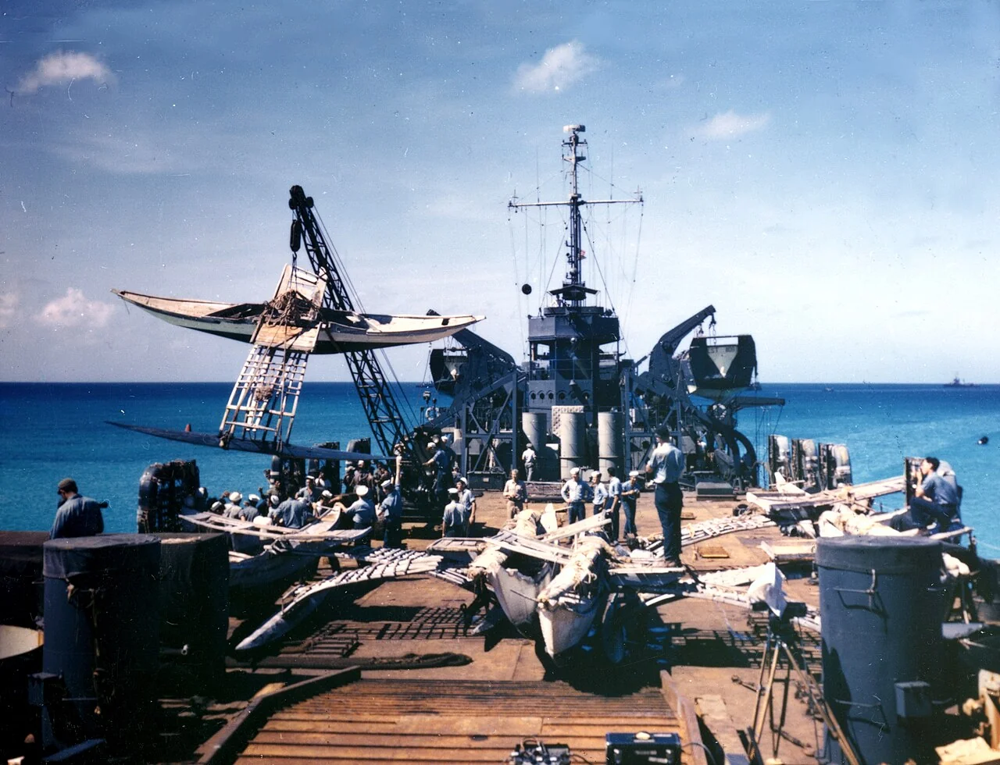
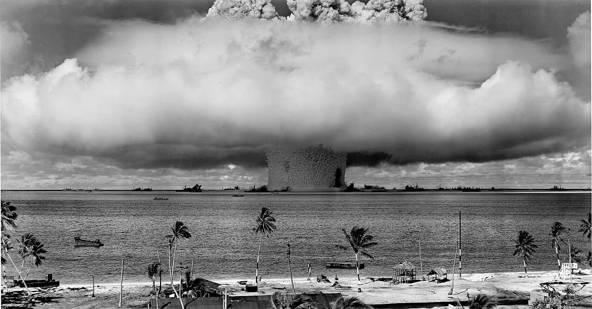
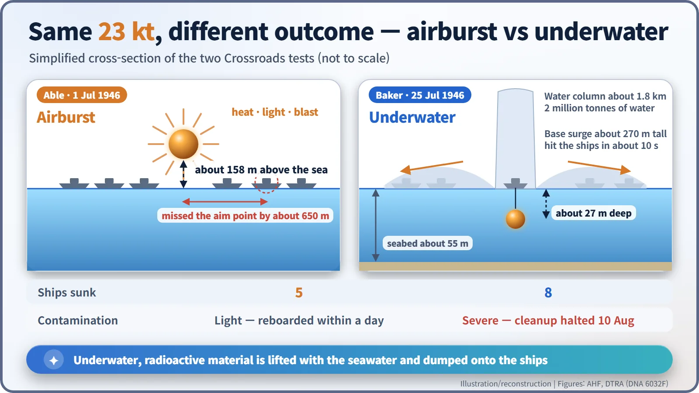
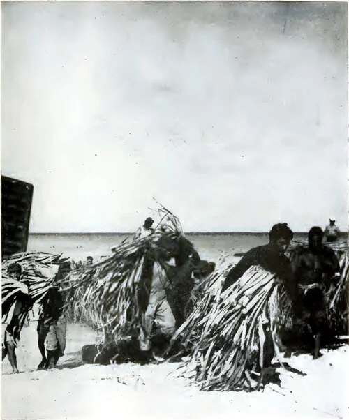
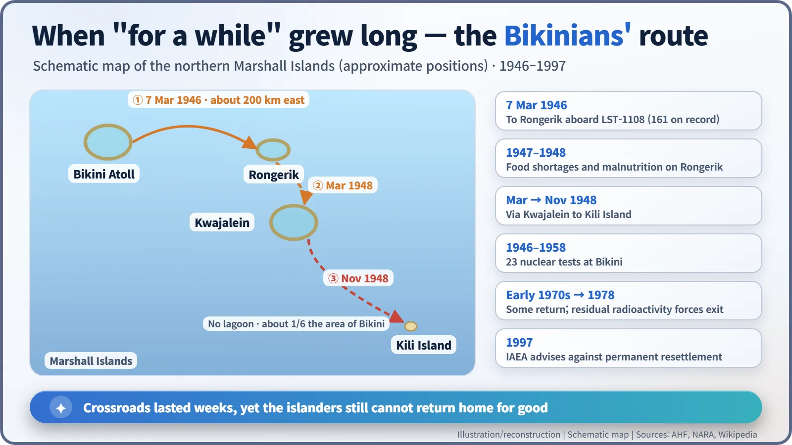

Nuclear History · 130
A Whole Fleet as the Target — Operation Crossroads and the Bikini Tests (1946)
An airburst that missed, an underwater blast that drenched the fleet in radioactive spray, and islanders who still cannot return home for good.
In the summer of 1946 the United States moored more than 90 ships in Bikini lagoon and set off two atomic bombs among them to see what would happen to a navy. The airburst "Able" missed its target; the underwater "Baker" blast drenched the fleet in radioactive spray that no amount of scrubbing could remove. The islanders who had been moved away "for a while" have still not been able to return for good.
"Everything is in God's hands"
"We are willing to go. Everything is in God's hands." On Sunday, 10 February 1946, after church on Bikini Atoll in the Marshall Islands, the US Navy's military governor, Commodore Ben H. Wyatt, asked the islanders to lend their home for a while, in words usually quoted as "for the good of mankind and to end all world wars." The reply is attributed to their leader, Juda, and was given on camera through an interpreter, so its exact nuance is open to debate. What is not in doubt is that "for a while" has now lasted the better part of eighty years. [1]
The war was over — so why another bomb?
Once Japan surrendered, an awkward question surfaced in Washington: if one atomic bomb could wipe out a fleet, did the country still need a navy? The Army and Navy decided to find out for themselves. Vice Admiral William H. P. Blandy (1890–1954) took command of Joint Task Force One, and the operation was named Crossroads. [2]
The scale was staggering. Around 42,000 people took part (some tallies put it above 45,000), and more than 90 ships were moored in Bikini lagoon as targets: obsolete US battleships, the aircraft carrier USS Saratoga, the captured Japanese battleship Nagato and the German cruiser Prinz Eugen. Pigs, goats, mice and rats were placed on board as test animals. It was also the first nuclear test announced in advance and staged in front of invited reporters and observers. [1]
First, though, the island had to be emptied. On 7 March 1946 the Bikinians were taken aboard the landing ship LST-1108 to Rongerik Atoll, roughly 200 km to the east. The number is usually given as 167, but the official pictorial record of the operation says 161.

Test Able: the bomb that missed
At about 9 a.m. on 1 July, a B-29 bomber dropped a plutonium bomb. It exploded roughly 158 m (520 ft) above the water with a yield of about 23 kilotons, the energy of some 23,000 tonnes of TNT. But it missed its aiming point, the battleship USS Nevada, by around 650 m. Five ships sank. Most of the surviving targets were boarded again within a day. [1] [2]
Test Baker: the sea stands up
At 8:35 a.m. on 25 July, a bomb of the same yield was hung about 27 m (90 ft) beneath the landing ship LSM-60 and detonated, the first underwater nuclear explosion in history. Roughly two million tonnes of water shot up in a column about 1.8 km high. As it collapsed, a ring of radioactive spray some 270 m tall, known as the "base surge", rolled over the target fleet in about ten seconds. Eight ships went down, including the battleship Arkansas, Saratoga and Nagato (not counting LSM-60 itself). [1]

Why were the two results so different? In an airburst, the energy goes mostly into heat, light and blast, and because the fireball does not touch the sea, relatively little radioactive material falls back on the spot. In a shallow underwater burst, fission products and seawater made radioactive by neutrons are lifted together and then dumped straight onto the ships. The blast lasts an instant; the contamination stays baked onto the decks.

What soap and brushes could not remove
Sailors scrubbed the decks with brushes, water and soap. It did not work. The radiological safety chief, Colonel Stafford L. Warren, warned that the effort was not only futile but dangerous. Plutonium gives off alpha particles, which are stopped by a sheet of paper and so went undetected by the Geiger counters and film badges of the day, yet they become a hazard once breathed in or swallowed. Blandy finally accepted the argument, and decontamination stopped on 10 August. A third, deep-water test, "Charlie", planned for 1947, was cancelled. Most of the target ships could not even be sold as scrap and were sunk. [1]
David Bradley (1915–2008), a physician with the radiological safety team, brought this invisible contamination to public attention with his 1948 book No Place to Hide.
What about the people who took part?
In 1996 the US Institute of Medicine (IOM) compared about 40,000 Crossroads participants with a control group of non-participating servicemen, following deaths through the end of 1992. Overall mortality was 4.6% higher (relative risk 1.046), but deaths from cancer and leukaemia showed no statistically significant difference. The researchers wrote that "these findings do not support a hypothesis that exposure to ionizing radiation was the cause of increased mortality," while noting possible unidentified factors, possible bias in how the roster was assembled, and that the study was not designed to detect low-dose effects. Veterans' groups have long held a different view, and a 1988 US law made participants with certain cancers eligible for compensation without having to prove causation. [4]
A home they could not return to
Food ran short on Rongerik and the islanders suffered from malnutrition. After a stay on Kwajalein in March 1948 they were moved in November 1948 to Kili, a small island with no lagoon. At Bikini, 23 nuclear tests were carried out up to 1958. Some families went back in the early 1970s, but residual radioactivity in their food forced another evacuation in 1978, and in 1997 the IAEA advised against permanent resettlement under the radiological conditions then prevailing. [1]


That same July in Paris, a new swimsuit was named the "bikini", and the atoll's name went round the world. The story of the people who had lived there took far longer to be heard. Perhaps that is the real lesson of Crossroads: an explosion is over in seconds, but radioactive contamination can linger, unseen, for a very long time.